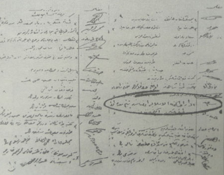
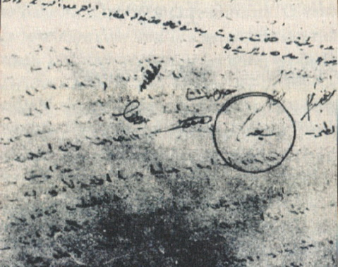
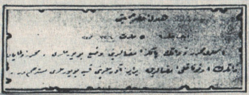
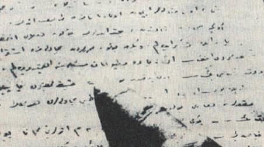

|
Yeþilay'ýn tutanaklarýnda Said Nursi |
  
|
|
Yeþilay'ýn tutanaklarýnda Said Nursi |
|
Yeþilay'ýn tutanaklarýnda Said Nursi

Resimde Yeþilay'ýn ilk toplantý günlerine ait imza ve hüviyet defterinden birinde Bediüzzaman'ýn imza ve hüviyeti görülmektedir.
Necmettin Þahiner'in araþtýrmasýna göre Yeþilay ilk kurulduðu günlerde, biri küçük defter olan iki defter tutmuþ. Bu üyelerin imza ve hüviyeti içindir. Ýþte bu defterde Üstad'ýn ve diðer üyelerin imza ve hüviyetleri yer almaktadýr. Diðer defter ise toplantýlarda yapýlan konuþmalar ve verilen tekliflerin bulunduðu tutanaklar yer almaktadýr.
Yine Þahiner'in tespitine göre bu tutanaklarýn bazýlarýnda Bediüzzaman'ýn da yer yer cümlelerine rastlanmýþtýr.
Ýþte Yeþilay tutanaklarýndaki Bediüzzaman'ýn sözleri:
Reis: Yirmi yaþýndan genç olanlara içki verilmemesi Dahiliye Nezaretine (Ýçiþleri Bakanlýðýna) müracaat edelim.
Bediüzzaman Said Efendi: “Ýyi… Ýyi..
Reis: (Gayr-i Müslimlerin) onbeþ yaþýndan aþaðý çocuklarýna da satýþ yasaktýr.
Bediüzzaman Said Efendi: “Bunlara dahil olarak Polis Nizamnamesini isteyelim.”
Tutanaklarýn bir yerinde “medreseleri üye kabul edelim” teklifine karþý:
Bediüzzaman Said Efendi: “Zaten talebeleri nehy-i münkerat ile mükelleftirler. Din namýna talebe vazife ile mükelleftir.”
Ýçkinin içilmesini önlemek amacýyla alýnan kararlar hakkýnda konuþulurken konuþmalarýn bir yerinde;
Bediüzzaman Said Efendi: “Ýstanbul’un yüzde onu muhâkemesine malik Yüzde doksaný avamdýr. Avam nasihatten ziyade kuvvetten korkar. Alaküllihal kuvvete ihtiyaç vardýr. Darül Hikmet’i-Ýslamiye çalýþýyor, tevkif edemedi. Anadolu’da birden men edildi.”
Yine bir baþka tutanakta:
Bediüzzaman Said Efendi: “En ziyade neþriyata ve matbuata ehemmiyet vermemiz lazýmdýr.”
Bediüzzaman Said Efendi: “Þeriatta hüküm var. Tabiplerin beyan ettiði hikmettir. Hamr, kumar bunlar kebâirdendir.” Diyerek alýnan kararlarda görüþlerini açýklama hususunda aktif rol aldýðý anlaþýlmaktadýr.
Bu tutanaklarýn gösterdiði önemli bir husus daha var o da; Bediüzzaman Hazretleri Yeþilay Cemiyetinin ilk yýlýnda gayretle çalýþmýþ ve toplantýlarýna katýlmýþtýr. Daha sonra zaten Ankara’ya davet edilmiþ ve oradan Van’a geçmiþtir. (Kaynak: risalehaber.com)

Yeþilay'ýn zabýt evrakýnda Bediüzzaman'ýn imzasý: "Said

Bediüzzaman'ýn katýldýðý 5 Mart 1920 Cuma günkü
Yeþilay toplantýsý imza defterinin ilk sayfasý

Yeþilay'ýn zabýt defterinden...
"Said Kürdî Efendi: En ziyade matbuat meselesine ehemmiyet verelim."